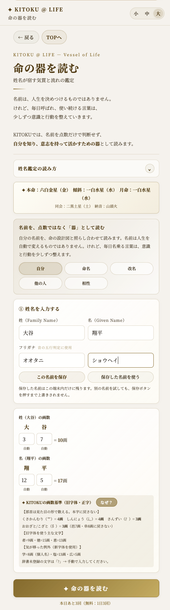

姓名鑑定の見方
姓名鑑定を、名前に点数をつける道具としてではなく、自分の傾向や努力の仕方の癖を知るための鏡として見ていきます。
良い悪いで裁かず、名前が持つ型を眺める。
響き、五行、陰陽、天地、画数を重ねて読む。
努力の仕方や補い方を、自分で選ぶ。
1. 姓名は生命そのもの。ただし、点数ではない
「姓名とは生命なり」。姓名鑑定の世界には、そう伝えられています。名前は、あなたの人生に長く寄り添う、大切な要素の一つです。
ただし、名前が仮に「完璧」だったとしても、それだけで人生が良くなることはありません。名前は、あなたに何かを強制するものではなく、あなたの傾向・癖を映す鏡です。
2. 名前だけで完結しない。トータルで見る視点
気学では、名前だけを切り離して判断することはしません。本命星・月命星と、名前が持つ五行を重ね合わせて見ることで、初めて意味が出てきます。
生まれ持った星に足りない要素を名前が補っていることもあれば、同じ傾向が重なって強く出ていることもあります。名前単体の吉凶より、「自分の星と名前を合わせて、今どんなバランスにあるか」を見るのが、KITOKU流の姓名鑑定です。
3. 5つの見方。五大真理をやさしく言うと
姓名鑑定では、名前を5つの角度から見ます。専門用語としては難しく見えますが、ひとつずつやさしく言い換えると、名前の見方がぐっと近くなります。
| 専門用語 | やさしく言うと |
|---|---|
| 読み下し（音） | 名前の響きが持つ雰囲気 |
| 五行の配列 | 名前全体が、木火土金水のどの気質に寄っているか |
| 陰陽の配列 | エネルギーの流れ方。粘り強く続くタイプか、切り替わりが多いタイプか |
| 天地の配合 | 姓と名のつながり方。バランスよく噛み合っているか |
| 画数 | 名前が持つ、大まかな気質・エネルギーの量 |
4. 画数は点数ではなく、エンジンの気質
画数と聞くと、「良い画数・悪い画数」という点数のイメージを持たれがちです。でも本来は、その人が持つエネルギーのタイプを表すものです。
例えば、じっくり型か、瞬発力型か。組織を率いるタイプか、独立して動くタイプか。画数が教えてくれるのは、「どう努力すれば力を発揮しやすいか」という傾向であって、幸不幸を決める通知表ではありません。
5. 名前が教えてくれるのは、努力の仕方の癖
姓名鑑定を通じて一番役立つのは、「この名前は吉か凶か」ではありません。自分は、どういう努力の仕方が向いているかという傾向をつかむことです。
コツコツ型か、一気に駆け上がる型か。一人で完結させたいタイプか、人と組んで進めたいタイプか。波が来た時に踏ん張れるタイプか、身軽に切り替えるタイプか。
こうした傾向を知っておくと、なぜかいつも同じところでつまずく、という悩みの理由が少し見えてくることがあります。
6. KITOKUでの見方。命の器を読む
KITOKUアプリには「命の器を読む」という姓名鑑定の入口があります。そこには、名前は人生を決めつけるものではなく、毎日呼ばれ、使い続ける言葉が少しずつ意識と行動を整えていく、という考え方が書かれています。
KITOKUでは、名前を点数だけで判断せず、自分を知り、意志を持って活かすための器として読みます。姓・名それぞれの画数は自動計算でき、フリガナから音の五行も判定できます。
入口は「自分」「命名」「改名」「他の人」「相性」から選べます。結果画面には個別の診断が出るため、このガイドでは入力画面だけを使います。

7. 決めるのは、名前ではなく、あなたです
名前は、あなたを縛るものではありません。あなたがどんな癖を持って生まれてきたかを教えてくれる、一枚の地図のようなものです。
100点の名前を探す必要はありません。今の名前が持つ傾向を知り、それを活かす工夫をする。それだけで、十分に人生は良くなっていきます。
決めるのは、名前ではなく、あなたです。